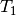
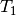

BRUECKNER_ORBS_R_CONVERGENCE¶
Convergence criterion for Breuckner orbitals. The convergence is determined based on the largest  amplitude. Default adjusts depending on E_CONVERGENCE
- Type: conv double
- Default: 1e-5
Convergence criterion for Breuckner orbitals. The convergence is determined based on the largest  amplitude. Default adjusts depending on E_CONVERGENCE
- Type: conv double
- Default: 1e-5